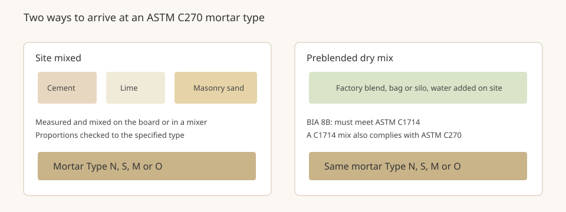

Mortar Smash › Trade guides › Preblended vs site-mixed mortar
The mortar Type still has to match the wall, whether the dry ingredients were proportioned on site or in a plant. The Brick Industry Association's Technical Note 8B (March 2020) is the source for the preblended rules on this page. For which Type to choose, see mortar types N, S, M and O and which mortar for brickwork.
Short answer
Most mortar is still mixed on site from separate materials. Preblended dry mortar, supplied ready-proportioned, is increasingly common. BIA 8B says those preblended mixes must meet ASTM C1714, and that a mix meeting C1714 also complies with ASTM C270. Do not change the specified Type, and do not add admixtures unless the specifier approves them.
What BIA 8B says about preblended mixes
In its mixing requirements, Technical Note 8B states that although most mortar is mixed on site, preblended dry mortar mixes are becoming more common compared with mixing individual ingredients. Those mixes are supplied to the job in consistent proportions, without the need for on-site batching and measurement controls. They must conform to ASTM C1714, Standard Specification for Preblended Dry Mortar Mix for Unit Masonry. The same paragraph says that preblended mixes that conform to C1714 also comply with ASTM C270.
That second point matters on the tools and tickets. C270 is the familiar specification that defines Types N, S, M and O and the property or proportion requirements for masonry mortar. C1714 is the companion specification for mortar that was blended dry in a factory instead of being batched from separate bags and sand piles on site. Meeting C1714 is how a preblended product shows it still satisfies C270. This page reports that relationship as BIA 8B states it; it is not a substitute for the current ASTM text.
Consistency still has to be kept on site
Even with a preblended product, Technical Note 8B stresses that accurate and consistent material quantities are wanted throughout the job. Admixtures should be used only when approved by the specifier. For site-mixed mortar, the note says measuring and batching should be by volume and checked using weight so that the specified proportions stay under control, and it points to ASTM C270 and Technical Note 8 for weights and recommended proportions. When a mechanical mixer is used, ingredients should be added so that the mix remains damp, typically about half the water, then about half the damp loose sand, then any lime, then the cement and the rest of the sand, then the rest of the water. Cement and lime should go in as whole bags, or at least half bags, to avoid oversanding. Mix for 3 to 5 minutes, and keep the same quantities and the same order from batch to batch. Those mixing steps are the site-mixed method; they are expanded in how to mix mortar.
Workable life does not change just because the dry ingredients came preblended. Use the mortar within the ASTM C270 window, and do not retemper colored mortar. See how long mortar stays usable and colored mortar.

Preblended vs site-mixed mortar FAQ
Is preblended mortar a substitute for ASTM C270?
No. BIA Technical Note 8B (March 2020) says preblended dry mortar mixes must conform to ASTM C1714, Standard Specification for Preblended Dry Mortar Mix for Unit Masonry. Mixes that conform to C1714 also comply with ASTM C270. You still choose a mortar Type that fits the job and the specification.
Why would a crew use a preblended mix?
Technical Note 8B says most mortar is still mixed on site, but preblended dry mixes are becoming more common. They arrive in consistent proportions and do not need on-site batching and measurement controls. Accurate, consistent quantities are still wanted throughout the job.
Can I add an admixture to a preblended or site-mixed batch?
Only when the specifier approves it. Technical Note 8B says admixtures should be used only when approved by the specifier, and that if they are approved they should be added at the same point in the mixing process every time.
Sources
Figures and uses are quoted or condensed from the sources above, which were read on 12 November 2026. Codes and project specifications differ by country and job; where they conflict with this page, follow them.
Published 12 November 2026 by Mortar Smash. General information only, not engineering or code advice.